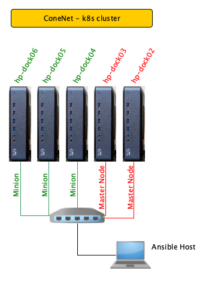
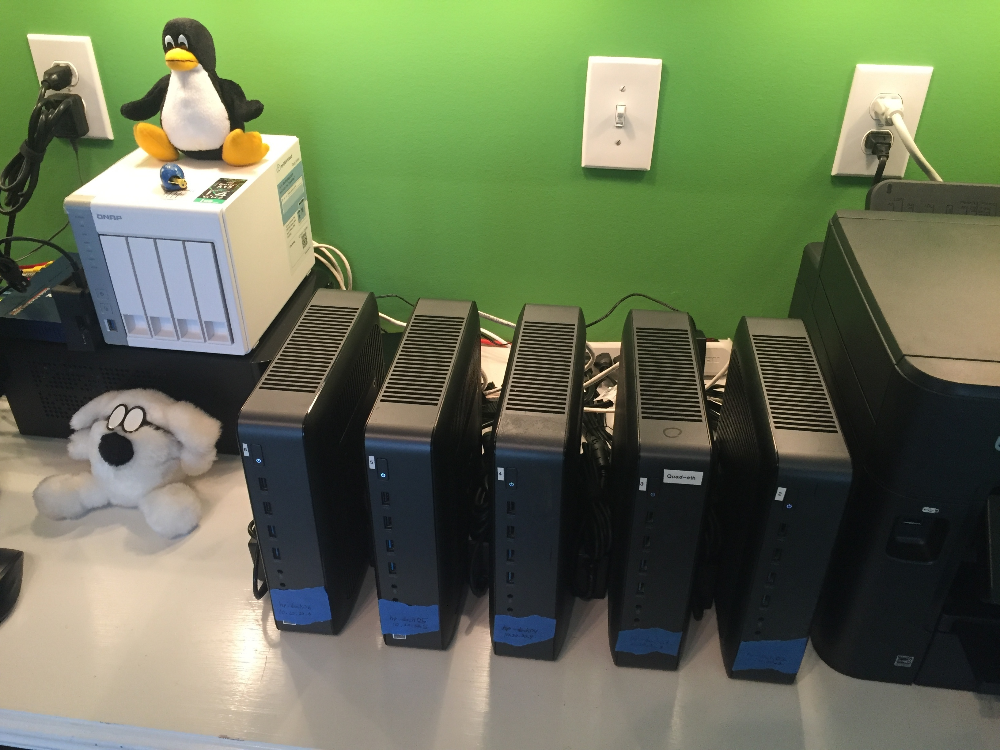
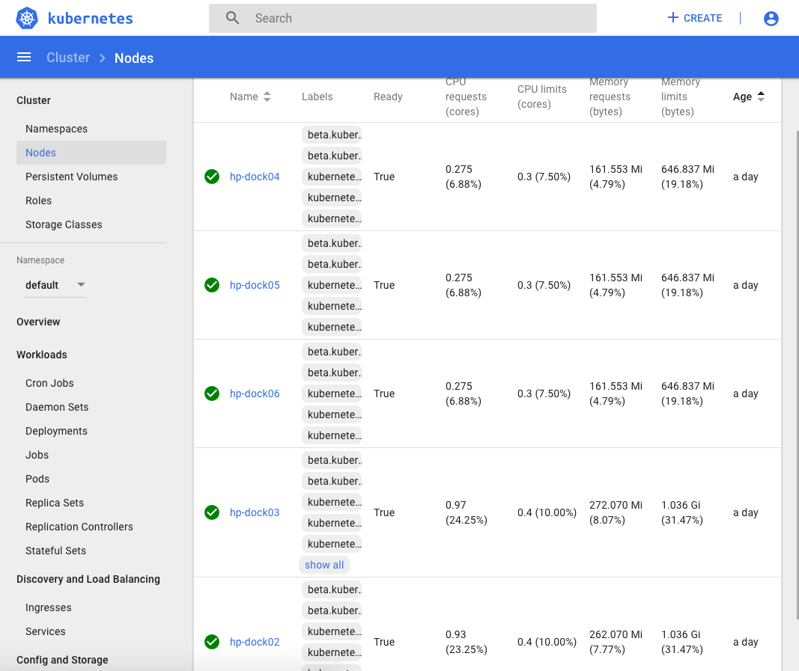

ConeNet Kubernetes
K8s cluster installed via KubeSpray
My K8s setup

I’m using a Linux virtual machine for executing the Ansible plays.
From a previous project where some friends and I were experimenting with pFsense routers at home, I had purchased a few HP-T620plus thin clients so I have chosen to use those for this project.
The cluster is comprised of 5 HP-T620plus thin clients. Each has 4Gig RAM, 16Gig M.2 SSD storage, and a quad core processor @ 2Ghz. So this is not a production environment to say the least, but it should allow me to experiment with the API’s and learn k8s without having to pay monthly for something I really don’t need everyday. Plus, I get the satisfaction and “geek cred” for running it on bare metal at home.
Each node is running Ubuntu 18.04 server that was installed from the Ubuntu “mini.iso” that I flashed to a usb thumb drive.
I configured each node’s network interface as DHCP, but gave them Static IP Leases on my pFsense router.

Install notes:
Clone the KubeSpray project
# make a directory to hold the project and 'cd' into it.
mkdir ansible_projects
cd ansible_projects
# clone the github repo
git clone https://github.com/kubernetes-sigs/kubespray.git ./kubespray
cd kubespray
Configure laptop Python Virtual Environment
python3 -m venv env
source env/bin/activate # to activate the new virtual env.
pip install --upgrade pip
pip install -r requirements.txt
If you are not familiar with virtual environments check this out.
Copy SSH key to all k8s nodes
The “user” needs SUDO rights on each k8s node.
# from the laptop console
ssh-copy-id user@node01
ssh user@node01
sudo su # to confirm sudo rights are configured.
# repeat for all nodes, as necessary
Enable IP4 forwarding
Hint: If you are familiar with Ansible Ad-Hoc commands and you have your inventory file configured already, you could do this using
“ansible all -m shell -a 'sysctl -w net.ipv4.ip_forward=1' --ask-become --become”.
# check if IP_Forward is already enabled.
# '0' is off, '1' is on.
cat /proc/sys/net/ipv4/ip_forward
# temp enable ip_forward
sysctl -w net.ipv4.ip_forward=1 # turn on temp
# ---------
# permanent enable
# ---------
# edit /etc/sysctl.conf
# add line "net.ipv4.ip_forward=1"
sysctl -p # to enable after file save.
Ansible Config
Modified the example given by KubeSpray in the “inventory/sample” folder.
inventory.ini file:
# ## Configure 'ip' variable to bind kubernetes services on a
# ## different ip than the default iface
# ## We should set etcd_member_name for etcd cluster. The node that is not a etcd member do not need to set the value, or can set the empty string value.
[all]
hp-dock02 ansible_host=10.20.30.2 etcd_member_name=etcd2
hp-dock03 ansible_host=10.20.30.3 etcd_member_name=etcd3
hp-dock04 ansible_host=10.20.30.4 etcd_member_name=etcd4
hp-dock05 ansible_host=10.20.30.5 etcd_member_name=etcd5
hp-dock06 ansible_host=10.20.30.6 etcd_member_name=etcd6
# ## configure a bastion host if your nodes are not directly reachable
# bastion ansible_host=x.x.x.x ansible_user=some_user
[kube-master]
hp-dock02
hp-dock03
[etcd]
hp-dock02
hp-dock03
hp-dock04
[kube-node]
hp-dock03
hp-dock04
hp-dock05
hp-dock06
[k8s-cluster:children]
kube-master
kube-node
Run the playbook
ansible-playbook -i ./inventory.ini cluster.yml -b -v -K
NOTE: Be prepared to wait a while for this to complete!
Verify cluster is up
# log into one of the MASTER nodes
ssh user@master-node
# become ROOT
sudo su
# get cluster status
kubectl get nodes
# ---EXAMPLE---
root@hp-dock03:~# kubectl get nodes
NAME STATUS ROLES AGE VERSION
hp-dock02 Ready master 35m v1.15.0
hp-dock03 Ready master 33m v1.15.0
hp-dock04 Ready <none> 32m v1.15.0
hp-dock05 Ready <none> 32m v1.15.0
hp-dock06 Ready <none> 32m v1.15.0
root@hp-dock03:~#
YES! It worked.
Other things we can try:
kubectl get pods --all-namespaces
Now to install the k8s Web Dashboard
# as ROOT on a MASTER node
kubectl apply -f https://raw.githubusercontent.com/kubernetes/dashboard/v2.0.0-beta1/aio/deploy/recommended.yaml
# then launch the proxy
kubectl proxy --address 0.0.0.0 --accept-hosts '.*'
# access the web ui from my laptop with
# http://hp-dock03:8001/api/v1/namespaces/kubernetes-dashboard/services/https:kubernetes-dashboard:/proxy/#/login
ERROR!
But of course there is an authentication issue. A missing ADMIN user that was not created on install for some reason.
create Admin acct
HowTo scroll down to the section on setup Kube Daskboard.
Create a file called: dashboard-adminuser.yaml
---
apiVersion: v1
kind: ServiceAccount
metadata:
name: admin-user
namespace: kube-system
---
apiVersion: rbac.authorization.k8s.io/v1
kind: ClusterRoleBinding
metadata:
name: admin-user
roleRef:
apiGroup: rbac.authorization.k8s.io
kind: ClusterRole
name: cluster-admin
subjects:
- kind: ServiceAccount
name: admin-user
namespace: kube-system
Apply the configuration with KubeCtl:
kubectl apply -f ~/Projects/k8s-cluster/dashboard-adminuser.yaml
Get the Token for the newly created user:
kubectl -n kube-system describe secret $(kubectl -n kube-system get secret | grep admin-user | awk '{print $1}')
Now just paste the token into the k8s Dashboard login screen under the “token” option.
DONE!
At least I thought I was done.
Work VPN issues
This should not apply to you.
As I have more than one private network on my LAN, when I activate my work VPN it only allows local traffic on one of my subnets. So to be able to reach the k8s cluster in the other private IP space while the work VPN client is “active”, I have to use a “bastion host” on my laptop’s subnet that can also “talk” to the cluster’s network.
To view k8s dashboard while connected to work VPN I have to:
# create local tunnel using a bastion server
ssh -L 6443:10.20.30.3:6443 192.168.9.107 -N
# -------------
# now I can open the k8s Dashboard on my laptop:
#
# when VPN is active.
# - https://localhost:6443/api/v1/namespaces/kube-system/services/https:kubernetes-dashboard:/proxy
#
# when VPN is NOT active:
# - - https://10.20.30.3:6443/api/v1/namespaces/kube-system/services/https:kubernetes-dashboard:/proxy

Michael Cone
Lead Software Engineer
My continuing education interests include Cloud Computing, Piloting and programming best practices.